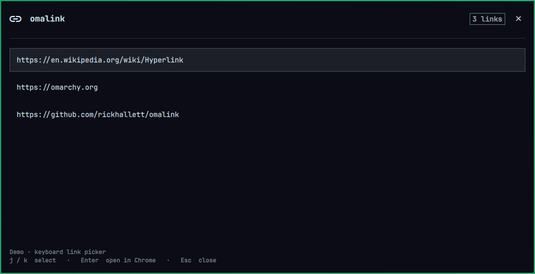

Open links on your screen
without touching the mouse.
A keyboard link picker for Omarchy. Press Super + U to gather links from the focused window. Choose with j / k, then press Enter to open in Chrome.

Install
For Omarchy Quattro. Requires Python 3, grim, Tesseract with English data, and Google Chrome.
omarchy plugin add https://github.com/rickhallett/omalink --enable
mkdir -p ~/.local/bin
ln -s ~/.config/omarchy/plugins/ms02.omalink/omalink.py ~/.local/bin/omalinkThen add the keyboard shortcuts. Setup is manual; the plugin does not install dependencies or change your bindings.
How it works
Reads visible text from Foot and Chrome when the optional integrations are configured. Other apps use local Tesseract OCR. Super + Shift + U scans the whole monitor.
Capture runs when you ask. Nothing is uploaded, and your clipboard stays unchanged. OCR can misread links—check the destination before opening.